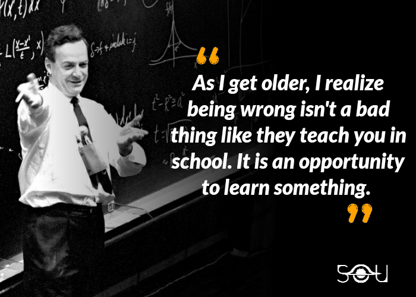

CV

- Volodymyr Klepykov
-
Info: email: voloymyr.klepykov@gmail.com, tel
+380992060115.
-
Summary: With a childish Curiosity, perseverance,
patience, focus and love for new knowledge, I go to my goal of
becoming a web developer. I study quickly, not so long ago I was a
builder, and now I study web development.
- Skils: JavaScript, Git, VS code.
-
Example code: hiSay = 'Hello World!';
alert(hiSay);
-
Education: course: "HTML5/ CSS3/JavaScript
fundamentals" by SoftServe.
online learning: freecodecamp, codewars. books: "Eloquent JavaScript"
by Marijn Haverbeke.
- English: A2.